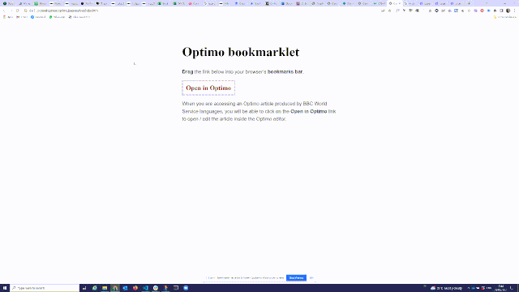

Drag the link below into your browser’s bookmarks bar.
Open in browserThis bookmarklet can be used to open the live version of an Optimo article in a new tab. The bookmarklet can be accessed only from the Settings tab of a published Optimo article.
